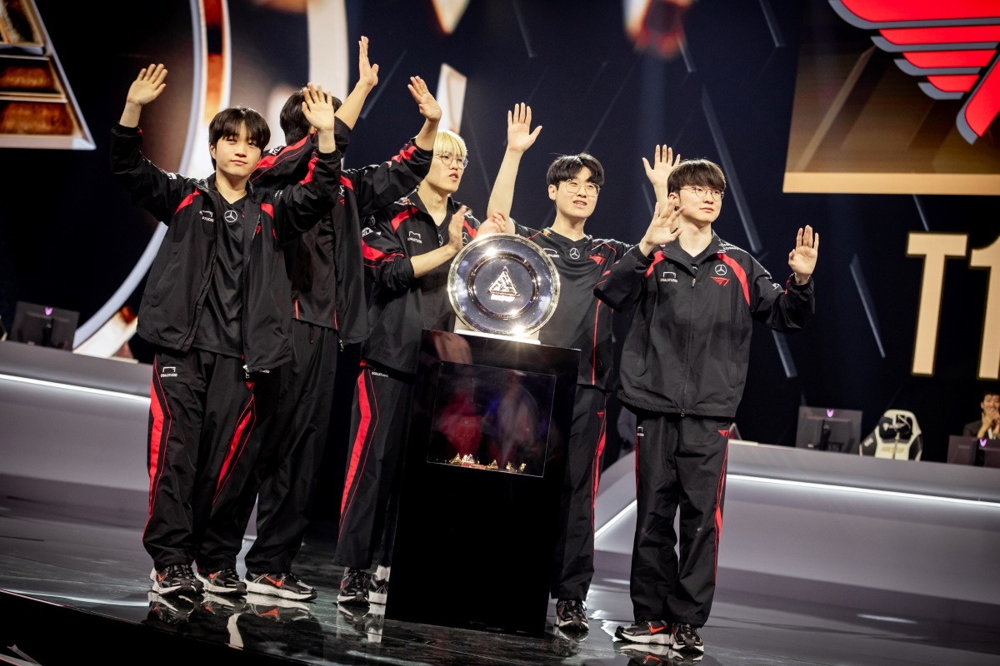

Your Worlds 2024 champions are T1! They prevailed 3-2 over Bilibili Gaming in the long-lasting final. It marks both Lee “Faker” Sang-hyeok‘s and the organization’s fifth global title. Faker became the only League player in the globe to win four titles, thanks to last year after T1 won Worlds 2023. He raises that record to five by winning Worlds 2024, and no one appears to be close to breaking it.
T1 celebrating their win in Worlds 2024 | Photo from Hotspawn
It’s important to note that, up until this final, T1 had never lost against an LPL team in a best-of-five match at the League of Legends World Championship. Bilibili Gaming has also never lost to T1 in an international best-of-five match. They eliminated the LCK representative from contention at MSI 2024 earlier this year after defeating them 3-2 in the lower bracket final. They weren’t as fortunate this time, which T1 capitalized on, leading to today’s headline of “T1 Wins Worlds 2024!”
For his exceptional playmaking abilities, Faker was awarded the Worlds 2024 final MVP, his second after their Worlds 2016 run. At the post-final press conference, T1 also shared their first thoughts on which champions they’d like to get Worlds 2024 skins for.
RougeX congratulates T1 and we celebrate T1 Wins Worlds with everybody else. Oh, and we also encourage everyone to check out the Los Ratones VS T1 match because it’s super interesting. That's all the news I have for now. But stay tuned so that you can catch the gaming current with GameEels!